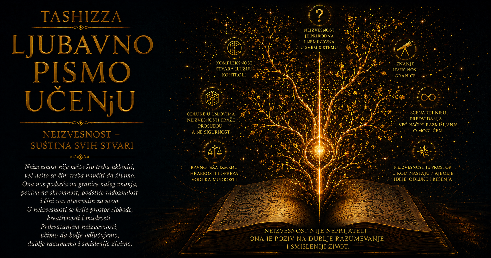

Ljubavno pismo učenju

Neizvesnost najčešće doživljavamo kao prazninu koju bi trebalo popuniti: kada bismo prikupili još podataka, pažljivije merili, duže računali i postavili bolja pitanja, budućnost bi se pred nama otvorila poput precizno nacrtane mape. Veliki deo naučnog i tehnološkog napretka zaista je nastao zahvaljujući toj težnji. Naučili smo da predviđamo pomračenja, pratimo oluje, procenjujemo rizike, oblikujemo materijale i upravljamo složenim mašinama. Ipak, priče o Edvardu Lorencu, Nasimu Talebu, Ervinu Šredingeru i Lotfiju Zadehu otkrivaju da nepoznato nema samo jedno poreklo i da se svaka neizvesnost ne može ukloniti istim sredstvom.
Lorenc nas je poveo u svet sistema čija su pravila poznata, a daleka budućnost ipak izmiče pouzdanom predviđanju. Taleb je skrenuo pažnju na retke događaje ogromnog uticaja, skrivene izvan prostora koji su naši modeli navikli da posmatraju. Šredingerova talasna mehanika pokazala je da na kvantnom nivou prirodu opisujemo raspodelama mogućih ishoda, dok je Zadeh pronašao matematički jezik za pojmove čije granice ostaju postepene i zavisne od konteksta. Njihove ideje zajedno stvaraju svojevrsnu gramatiku neizvesnosti: uče nas da razlikujemo neizmereno, nepredvidivo, neočekivano, verovatno i neodređeno.
Ta razlika ima ogromnu praktičnu vrednost. Kada ne znamo hoće li sutra padati kiša, suočeni smo sa neizvesnošću ishoda koja se može izraziti verovatnoćom. Kada poznatu temperaturu opisujemo kao „prilično toplu”, govorimo o postepenosti značenja. Kada se dve gotovo iste simulacije vremenom raziđu, posmatramo osetljivost na početne uslove. Kada se dogodi preokret koji prethodno iskustvo gotovo nije uzimalo u obzir, ulazimo u Talebov svet crnih labudova. Kada kvantni sistem pre merenja opisujemo superpozicijom mogućih stanja, susrećemo neizvesnost ugrađenu u samu formalnu strukturu teorije. Reč je ista, ali su pojave različite, pa ozbiljno mišljenje započinje njihovim razdvajanjem.
Lorencova teorija haosa naučila nas je da zakonitost i predvidivost ne moraju imati isti domet. Atmosfera može dosledno slediti fizičke zakone, dok najmanje nepoznate razlike u temperaturi, pritisku i strujanju vazduha rastu kroz mrežu povratnih uticaja, sve dok udaljene putanje prognoze ne postanu međusobno neprepoznatljive. Povećanje računarske snage produžava i poboljšava prognozu, ali ne uklanja činjenicu da početno stanje nikada ne poznajemo sa beskonačnom preciznošću. Zreo odnos prema složenom sistemu zato ne zahteva jednu nepokolebljivu sliku budućnosti, nego poređenje većeg broja mogućih putanja, praćenje njihovog razilaženja i jasno saopštavanje granica pouzdanosti.
Talebova misao proširuje ovo upozorenje. Ponekad teškoća ne potiče samo iz sitnih odstupanja unutar poznatog modela, već iz mogućnosti koju model gotovo uopšte nije obuhvatio. Prošlost nas u takvim oblastima lako zavodi: duga stabilnost postaje dokaz trajne sigurnosti, prosečan rezultat prikriva retke krajnosti, a odsustvo prethodne katastrofe pretvara se u uverenje da se ona ne može dogoditi. Kada preokret ipak nastupi, ljudski um naknadno povezuje znakove u urednu priču i stvara utisak da je ishod sve vreme bio vidljiv. Takva retrospektivna jasnoća pruža utehu, ali istovremeno prikriva koliko su naša prvobitna očekivanja bila ograničena.
Iz Talebove ideje proizlazi važan pomak u načinu pripremanja za budućnost. Ako ne možemo nabrojati sve događaje koji bi nas mogli pogoditi, možemo proučiti sopstvenu izloženost njihovim posledicama. Umesto pitanja šta će se tačno dogoditi, korisnije je pitati šta bi nas moglo nepovratno slomiti, gde postoji jedna tačka kvara, od čega previše zavisimo i koliko prostora imamo za prilagođavanje. Rezerve, raznovrsnost, mogućnost promene pravca, mali eksperimenti i izbegavanje nenadoknadivih gubitaka predstavljaju razborite odgovore na budućnost koja neće poštovati sve naše pretpostavke.
Antifragilnost ovom odgovoru dodaje još jednu dimenziju. Otpornost omogućava sistemu da podnese udar i sačuva svoje osobine, dok antifragilna struktura ume da koristi ograničene poremećaje, povratne informacije i greške kako bi se razvijala. Mišić jača pod pažljivo odmerenim opterećenjem, znanje postaje dublje kada se izloži prigovorima, a dobar program napreduje kada se propusti rano otkriju u kontrolisanim uslovima. Veliki i nekontrolisani udari mogu uništiti i veoma prilagodljiv sistem, zbog čega antifragilnost ne podrazumeva romantično prizivanje kriza. Njena vrednost nalazi se u učenju iz malih iskušenja pre nego što se greške nagomilaju do tačke sa koje povratak više nije moguć.
Šredinger nas vodi ka drugačijoj vrsti neizvesnosti. Njegova jednačina omogućila je izuzetno precizno opisivanje razvoja kvantnog sistema, ali ono što se razvija jeste talasna funkcija iz koje izvodimo verovatnoće mogućih rezultata merenja. Nauka je tako dobila teoriju zapanjujuće prediktivne moći bez povratka klasičnoj predstavi da svaka čestica u svakom trenutku mora posedovati sve osobine u obliku koji samo čeka da bude otkriven. Kvantna mehanika naučila je fizičare da preciznost može pripadati raspodeli mogućnosti, a da pojedinačan ishod ipak ostane otvoren do merenja.
Šredingerova mačka, zamišljena kao kritika pojednostavljenog prenošenja kvantnih pojmova u svakodnevni svet, postala je trajna slika napetosti između matematičkog opisa i ljudske intuicije. Njena vrednost ne počiva na tvrdnji da su sve životne mogućnosti doslovno kvantne superpozicije. Ona nas podseća koliko lako jezik, razvijen za vidljivi svet predmeta i događaja, postaje nedovoljan pred pojavama koje ne slede njegove uobičajene kategorije. Tada intelektualna odgovornost zahteva da sačuvamo preciznost teorije i istovremeno priznamo da njeno značenje još može biti predmet dubokih rasprava.
Zadehova fazi logika osvetljava još jednu zamku: potrebu da svaku pojavu nasilno smestimo na jednu od dve strane. U stvarnom životu mnoge osobine nastaju postepeno. Čovek može delimično razumeti složen problem, projekat može biti uglavnom uspešan uz nekoliko ozbiljnih slabosti, a opasnost može rasti bez jedne prirodne tačke u kojoj iznenada postaje „visoka”. Fazi skupovi omogućavaju da takve gradacije dobiju formalni oblik, pa reči poput „blago”, „prilično” i „veoma” mogu postati deo disciplinovanog zaključivanja. Time se približnost oslobađa optužbe da je nužno neuredna, pod uslovom da su njena merila pažljivo određena i proverena.
Integracija ove četiri ideje pruža moćan način razmišljanja. Lorenc nas pita koliko brzo male početne greške rastu. Taleb proverava da li smo prevideli retke događaje i potcenili njihove posledice. Šredinger nas uči da se znanje ponekad najtačnije izražava verovatnoćama, dok Zadeh ispituje jesu li kategorije kojima opisujemo pojavu suviše oštre za njenu stvarnu prirodu. Kada ova pitanja postavimo zajedno, neizvesnost prestaje da bude bezoblična magla. Ona postaje skup različitih problema čije poreklo možemo istraživati i čijim posledicama možemo razboritije upravljati.
Zamislimo donošenje odluke o složenom zdravstvenom, obrazovnom, poslovnom ili društvenom pitanju. Podaci mogu biti nepotpuni, ishodi verovatnosni, odnosi među uzrocima nelinearni, a pojmovi poput uspeha, rizika i napretka postepeni. Uz sve to, postoji mogućnost retkog događaja koji bi promenio čitav kontekst. Jedna kruta prognoza tada stvara više privida nego znanja. Odgovorniji pristup poredi scenarije, navodi pretpostavke, procenjuje raspon posledica, prepoznaje ranjivosti, ostavlja mogućnost ispravke i unapred određuje znake koji će zahtevati promenu odluke.
Takav način mišljenja menja i značenje dobrog plana. Plan više nije obećanje da će se budućnost ponašati prema našoj zamisli, nego pripremljena sposobnost delovanja u više mogućih okolnosti. On sadrži smer, ali dopušta promenu puta; oslanja se na znanje, ali prati nove podatke; štiti ono čiji bi gubitak bio nenadoknadiv, dok u bezbednijim oblastima dopušta pokušaje, greške i otkrivanje neočekivanih prilika. Njegova snaga meri se i kvalitetom prilagođavanja onda kada početna predviđanja prestanu da važe.
U obrazovanju ova integracija ima naročitu važnost. Učenik ne napreduje pravolinijski, niti se njegovo znanje može potpuno predstaviti jednom ocenom. Mala promena u podršci, poverenju ili načinu objašnjavanja ponekad pokreće veliki razvoj, dok dugotrajna ravnodušnost može ostati skrivena sve do naglog odustajanja. Neočekivani susret sa knjigom, nastavnikom ili idejom može preusmeriti čitav život. Razumevanje sazreva u nijansama, kroz nesigurne pokušaje i privremene zastoje, pa pravedno obrazovanje istovremeno prati merljive rezultate, prepoznaje prelazne stepene i ostavlja prostor za mogućnosti koje raniji uspeh nije mogao da predvidi.
Neizvesnost menja i odnos prema grešci. Kada od sebe očekujemo nepogrešivo predviđanje, svaka greška deluje kao lični poraz koji treba prikriti. Kada prihvatimo ograničenja modela, greška može postati podatak o pretpostavci koju treba preispitati, promenljivoj koju nismo pratili ili granici koju smo postavili na pogrešnom mestu. Takav odnos ne oslobađa čoveka odgovornosti. Naprotiv, zahteva da razlikuje neizbežnu neizvesnost od nemara, da beleži sopstvena očekivanja pre ishoda i da svoje odluke ocenjuje prema kvalitetu tada dostupnog rasuđivanja, a ne samo prema naknadnoj sreći ili nesreći.
Posebna opasnost javlja se kada sigurnost u govoru zamenimo pouzdanošću znanja. Složeni sistemi često nagrađuju skromne formulacije: „prema sadašnjim podacima”, „u ovom rasponu”, „pod ovim uslovima” i „promenićemo procenu ako se pojave novi dokazi”. Takav jezik ponekad zvuči slabije od kategoričke tvrdnje, premda preciznije pokazuje gde se završava činjenica, a počinje pretpostavka. Intelektualna skromnost predstavlja disciplinu kojom sprečavamo da želja za izvesnošću prekroji granice onoga što zaista znamo.
Živeti bez svih odgovora zato ne znači prepustiti se pasivnosti. Mornar ne upravlja vetrom, ali proučava vreme, održava brod, menja jedra i izbegava nepotrebno opasne pravce. Lekar ne može obećati ishod, ali može porediti dokaze, procenjivati korist i štetu, pratiti reakciju pacijenta i prilagođavati terapiju. Programer ne predviđa svaki kvar, ali može ukloniti pojedinačne tačke otkaza, praviti rezervne kopije i graditi sistem koji greške otkriva pre nego što postanu katastrofalne. U svakom od tih primera znanje dobija vrednost kroz spoj predviđanja, pripreme, praćenja i prilagođavanja.
Neizvesnost ujedno čuva prostor slobode, stvaralaštva i otkrića. Budućnost koja nije potpuno zatvorena dopušta da novi susret promeni naše mišljenje, da mala ideja preraste u veliko delo i da čovek prevaziđe sliku koju su o njemu oblikovala ranija iskustva. Talebov povoljan crni labud podseća da neočekivano donosi i prilike, Lorenc da mali uticaji ponekad rastu, Zadeh da razvoj ima mnogo međustepena, a Šredinger da priroda ume da sačuva više mogućnosti nego što svakodnevna intuicija očekuje.
Najdublja zajednička poruka ovih ideja nalazi se u promeni našeg odnosa prema znanju. Znati više znači jasnije uočavati razliku između činjenice i procene, modela i stvarnosti, verovatnoće i stepena pripadnosti, predvidivog rizika i iznenađenja koje se još ne nalazi na našoj mapi. Takvo znanje ne obećava potpunu kontrolu. Ono nam daje bolja pitanja, razumnije zaštite, širi pogled na moguće ishode i spremnost da sopstveno mišljenje menjamo zajedno sa dokazima.
Hrabrost pred neizvesnošću ne sastoji se u odsustvu straha, niti u samouverenoj tvrdnji da će sve ispasti dobro. Ona se gradi sposobnošću da delujemo bez konačne garancije, da zaštitimo ono što je dragoceno, da ostavimo prostor za učenje i da posle svakog novog saznanja ponovo procenimo put. Između Lorencovih razdvojenih putanja, Talebovih neočekivanih preokreta, Šredingerovih mogućih ishoda i Zadehovih nijansi nastaje zrela sloboda uma: sloboda da tragamo za odgovorima, a da ne izmišljamo sigurnost tamo gde je nema.
Život bez svih odgovora stoga može biti razuman, stvaralački i duboko smislen. Ne možemo unapred posedovati budućnost, ali možemo razvijati znanje koje prepoznaje sopstvene granice, sisteme koji podnose promene, odluke koje ostavljaju mogućnost ispravke i karakter sposoban da izdrži otvoreno pitanje. Neizvesnost tada postaje prostor u kojem se susreću radoznalost i odgovornost, skromnost i odvažnost, oprez i nada. Upravo u tom prostoru čovek uči da misli svojom glavom, da raste kroz promenu i da od nepoznatog ne traži obećanje, nego mogućnost.